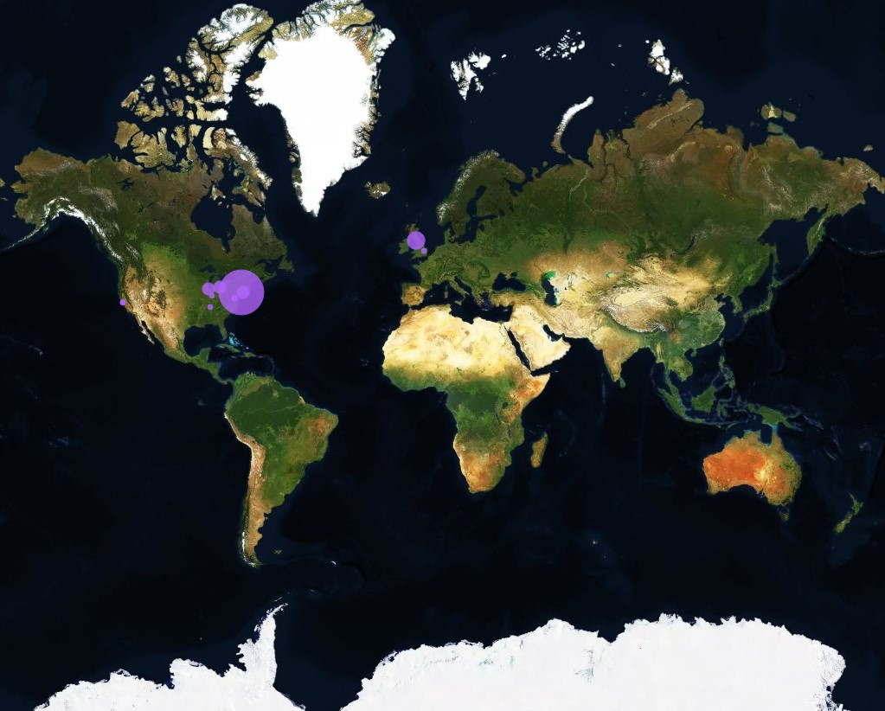
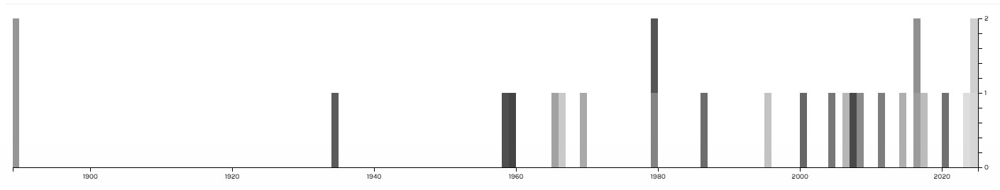

The Libary Shelf I chose to research on was the world facts shelf. Here is a link to the csv file
The Zotero group is where I collected all my sources for the data.
The Libary shelf I used to map data.

The purple dots show the location of where they were published. The larger the dot the more books that were published there.
The books and where I found them. Physical being in the libary, and interlibary being in an onlike libary, and web an online website.

The timeline represents the books and the year they were published.